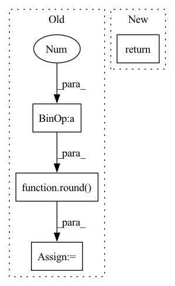

Pattern ID :37014

Before Change
generator=torch.Generator().manual_seed(42)
)
else:
self.train_set, self.valid_set, self.test_set = random_split(
self.fulldataset, [round(datalen * 0.8), round(datalen * 0.1), round(datalen * 0.1)],
generator=torch.Generator().manual_seed(42)
)
After Change
datalen = self.fulldataset.__len__()
print("datalen:")
print(datalen)
return
// self.train_set, self.valid_set, self.test_set = random_split(
// self.fulldataset, [183, 22, 22], //hardcoded solution to rounding error
// generator=torch.Generator().manual_seed(10) //changed random_seed
// )
In pattern: SUPERPATTERN
Frequency: 3
Non-data size: 4
Instances
Fragment ID: 105292934
Project Name: danbider/lightning-pose
Commit Name: 545a2f0293f923aca78924357ba161baf71f2982
Time: 2021-07-15
Author: ubuntu@ip-172-31-72-121.ec2.internal
File Name: pose_est_nets/datasets/datasets.py
M Class Name: TrackingDataModule
N Class Name: TrackingDataModule
M Method Name: setup(2)
N Method Name: setup(2)
M Parent Class: pl.LightningDataModule
N Parent Class: pl.LightningDataModule
M File Name: pose_est_nets/datasets/datasets.py
N File Name: pose_est_nets/datasets/datasets.py
M Start Line: 200
M End Line: 213
N Start Line: 196
N End Line: 199
'>
Before Change
image_width, image_height = image_bounds
min_c = np.min(np_polygon, axis=0)
max_c = np.max(np_polygon, axis=0)
h_extend = int(round(0.1 * (max_c[1] - min_c[1])))
w_extend = int(round(0.1 * (max_c[0] - min_c[0])))
min_row = np.maximum(0, min_c[1] - h_extend)
min_col = np.maximum(0, min_c[0] - w_extend)
After Change
Tuple: extended bounds
np_polygon = np.array(polygon.exterior.coords)
return get_extended_bounds_from_np_array_polygon(
np_polygon, image_bounds, extend_factor=extend_factor
)
'>
Fragment ID: 105292935
Project Name: dsgoficial/pytorch_segmentation_models_trainer
Commit Name: 2b8d58fa4129e5244a7313dcc00b1bea7fd6ed1d
Time: 2021-11-26
Author: philipeborba@gmail.com
File Name: pytorch_segmentation_models_trainer/utils/polygonrnn_utils.py
M Class Name: AnonimousClass
N Class Name: AnonimousClass
M Method Name: get_extended_bounds(3)
N Method Name: get_extended_bounds(3)
M Parent Class:
N Parent Class:
M File Name: pytorch_segmentation_models_trainer/utils/polygonrnn_utils.py
N File Name: pytorch_segmentation_models_trainer/utils/polygonrnn_utils.py
M Start Line: 452
M End Line: 462
N Start Line: 452
N End Line: 455
'>
Before Change
// p4 ─> p4p5 ─> pan_out1
// ↓ ↑
// p3 ─> pan_out2 ───┘
csp_depth = max(round(depth_mul * 2), 1)
p3, p4, p5 = features // p3: [64, 64, 256], p4: [32, 32, 512], p5: [16, 16, 512]
p3 = conv_dw_pw_block(p3, p3.shape[-1] // 2, kernel_size=1, activation=activation, name=name + "p3_down_") // [64, 64, 128]
p4 = conv_dw_pw_block(p4, p4.shape[-1] // 2, kernel_size=1, activation=activation, name=name + "p4_down_") // [32, 32, 256]
// p4p5: [32, 32, 256]
p4p5 = upsample_merge([p4, p5], csp_depth, use_depthwise_conv=use_depthwise_conv, activation=activation, name=name + "p4p5_")
// pan_out2: [64, 64, 128]
pan_out2 = upsample_merge([p3, p4p5], csp_depth, use_depthwise_conv=use_depthwise_conv, activation=activation, name=name + "p3p4p5_")
// pan_out1: [32, 32, 256]
pan_out1 = downsample_merge([pan_out2, p4p5], csp_depth, use_depthwise_conv=use_depthwise_conv, activation=activation, name=name + "c3n3_")
// pan_out0: [16, 16, 512]
After Change
cur_name = name + "c3n{}_".format(id + 3)
nn = downsample_merge([downsamples[-1], ii], fpn_depth, use_depthwise_conv=use_depthwise_conv, activation=activation, name=cur_name)
downsamples.append(nn)
return downsamples
YOLORHead
'>
Fragment ID: 105292930
Project Name: leondgarse/keras_cv_attention_models
Commit Name: bef44f2c07106cb7cf251facb6581ef6220cde48
Time: 2022-03-18
Author: leondgarse@gmail.com
File Name: keras_cv_attention_models/yolor/yolor.py
M Class Name: AnonimousClass
N Class Name: AnonimousClass
M Method Name: path_aggregation_fpn(5)
N Method Name: path_aggregation_fpn(5)
M Parent Class:
N Parent Class:
M File Name: keras_cv_attention_models/yolor/yolor.py
N File Name: keras_cv_attention_models/yolor/yolor.py
M Start Line: 139
M End Line: 152
N Start Line: 204
N End Line: 220